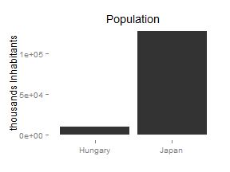

Web application for learning country statistics Based on OECD 2014 Factbook data Simple question-and-answer interface Answers include plots that are easy to understand Questions are auto-generated from the data
Shiny server randomly picks a statistic (ex. population, GDP per capita) and picks two countries in the OECD Factbook data. ## [1] "Population" ## $country ## [1] "Hungary" ## ## $value ## [1] 9920.361 ## $country ## [1] "Japan" ## ## $value ## [1] 127515
Questions and options are generated based on the data. Provide feedback by showing the values in a plot.  Further Directions Include interactive plot for questions and answers Include more data Include time-series related questions (ex. how GDP of a country changed over last 5 years)